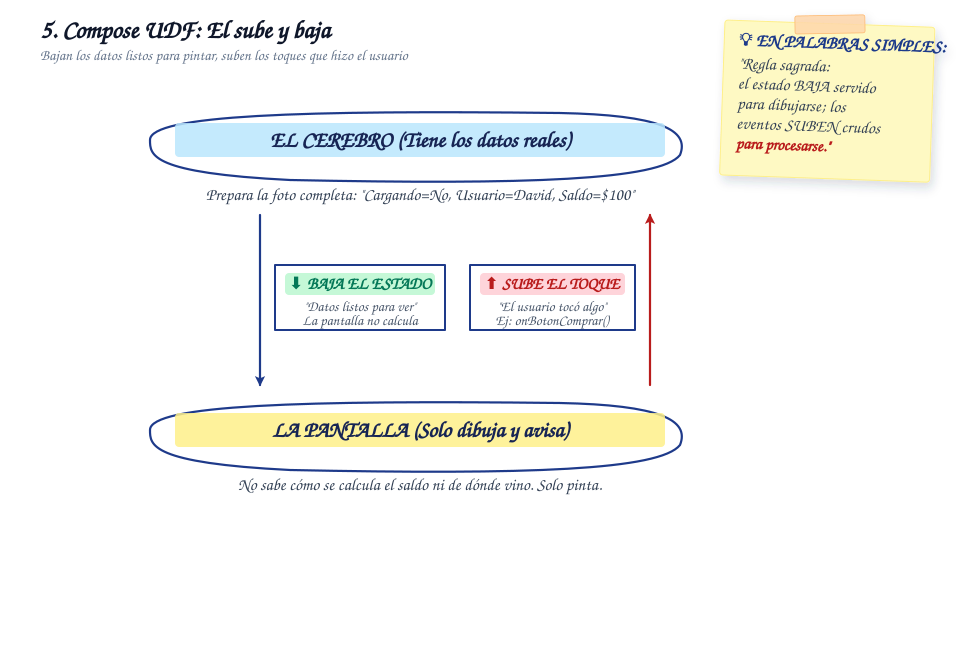

Jetpack Compose UDF
Flujo de datos unidireccional con eventos que ascienden y estado inmutable que desciende.
Animación Explicativa del Flujo
¿Qué es Unidirectional Data Flow en Compose?
En el modelo declarativo de Jetpack Compose, el patrón Unidirectional Data Flow (UDF) establece que el estado fluye hacia abajo (desde los contenedores o el ViewModel hacia las funciones hijas) y los eventos fluyen hacia arriba (desde los componentes interactivos hacia quien gestiona el estado a través de lambdas o callbacks).
La práctica central de este patrón es el State Hoisting (elevación del estado): los componentes visuales se vuelven libres de estado (stateless), recibiendo únicamente los datos que necesitan para dibujarse y delegando la responsabilidad de mutar variables a niveles superiores.
Diagrama Conceptual

Ventajas en Proyectos Reales
-
Composables Sin Efectos Secundarios: Los componentes stateless son predecibles y fáciles de renderizar en vistas previas con
@Preview, agilizando el diseño de sistemas de diseño atómicos sin levantar lógica pesada. -
Recomposición Inteligente a 60/120 FPS: Compose omite (skipping) automáticamente el redibujado de composables cuyas entradas inmutables no han cambiado, optimizando el consumo de CPU y batería del dispositivo.
-
Sincronización Garantizada: Se eliminan discrepancias donde un campo de texto o interruptor muestra un valor que no coincide con la base de datos o el estado interno de la aplicación.